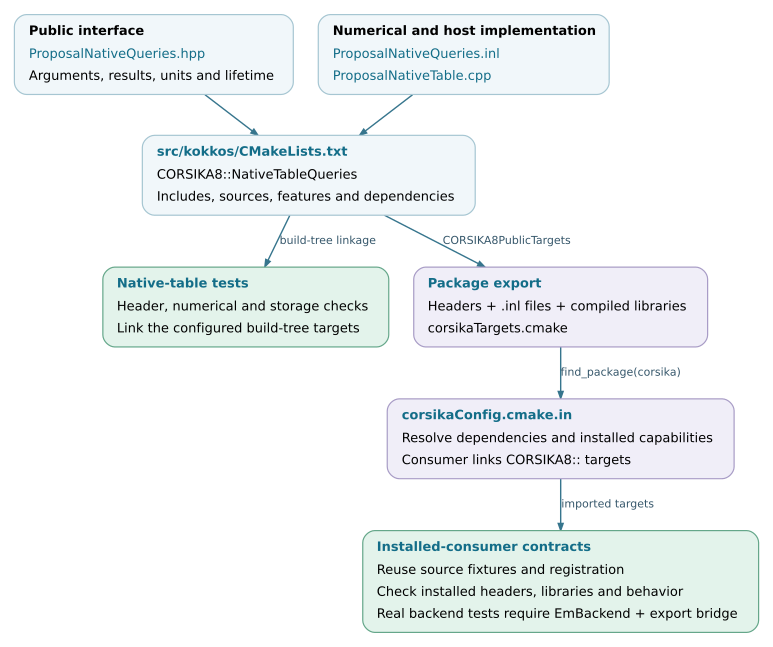

Development and maintenance
Maintenance of the Kokkos integration requires preserving the contracts between native C8 objects, numerical data, execution services and physics outputs. The application constructs the physical problem; library components convert its data, execute calculations and return results. A change should be implemented at the layer responsible for that behavior and reviewed against the components that depend on it.
This chapter describes the source organization, extension points and review workflow for contributors. It complements Build and backend portability and Validation and performance, which document build/runtime requirements and how to test correctness and performance.
Note
Implementation baseline: d5297c43. Existing source contracts and recommended development practices are distinguished below. These recommendations do not establish an official CORSIKA integration policy or certify every file’s compliance with current upstream conventions. Changes intended for upstream should follow the target branch’s requirements and review process.
Component responsibilities
The following boundaries identify where to begin a change. They also identify what should remain outside the component’s responsibility.
Component |
Responsibility and source entry points |
Contract to preserve |
|---|---|---|
Application integration |
Native scene, models, process sequence and outputs in c8_air_shower.cpp; library binding and execution in CascadeExtension.hpp. |
Explicit configuration and object lifetimes. Particle scheduling and reaction-specific completion belong in library components. |
Host conversion and preparation |
Native particle conversion, environment export and table preparation; see Particle data and state, Environment and geometry and Physics models and table preparation. |
Physical units, coordinates, material and node identities, supported domains and immutable prepared inputs. |
Numerical calculations |
Table queries, geometry, transport, final states and radio projection; see Transport and interaction kernels and Radio calculation. |
Physics definitions, numerical domains, random inputs and result conventions. Numerical functions should not acquire process-global runtimes or own application objects. |
Execution and resident storage |
BackendInstanceImplementation.inl and the runtime, queue and accumulator owners. |
Execution-instance ordering, valid memory access, ownership, capacities and completion before storage release. |
Routing and coordination |
EmRouter.inl, HybridCascade.inl and AirShowerCoordinator.cpp. |
Complete particle-state transfer, CPU/device handoff, static worker assignments, event completion and output merging. |
Output and diagnostics |
Native output libraries and Kokkos record projection/reporting; see Outputs and run checks and Performance measurement. |
Observable definitions, units, event identity, normalization, completion status and the actual scope of each measurement. |
The public host interface IEmBackend separates the router from a selected
execution implementation. The shared numerical implementation is instantiated
for different execution spaces; narrow backend-specific adapters handle
operations such as runtime queries and completion. A device optimization
therefore need not introduce a second copy of the physical model. See
IEmBackend.hpp and Device-code contracts and portability.
Review the kind of change explicitly
Separate a structural refactor from a change in numerical or physical behavior. File movement, interface simplification and target reorganization can still affect ownership, includes, compile definitions and instantiation. Retain fixed-input comparisons and installed-consumer checks for those changes. Do not silently modify a reference implementation to make a changed candidate pass.
A numerical optimization needs a documented domain, reference, tolerance and performance workload. A scheduling change additionally needs a stated random-stream policy, queue-accounting checks and complete-shower validation when histories change. A new physics model needs independent physical validation; preserving an older implementation is only one source of evidence. The detailed selection of tests is in Validation and performance.
When behavior changes intentionally, describe the previous and new behavior with a concrete input or configuration. Record the reason, expected output differences and compatibility impact. For a retained reference fixture, either preserve it as the old-behavior regression or update it with an explicit rationale and an independent check of the corrected behavior.
Interface review
Before changing a public declaration, transferred record or serialized format, identify its producer, owners, consumers and validation points. Review these contracts together:
Values: units, coordinate system, physical meaning, index domains, sentinel values and allowed numerical range.
Storage: owning versus borrowed data, memory space, object lifetime, transfer direction and invalidation after a resize or scene change.
Execution: permitted calling thread, execution instance, asynchronous completion, mutable state and session reuse.
Results: successful and failed outcomes, whether partial output is valid, CPU completion requests and associated counters.
Reproducibility: particle and event identities, random keys, stream progression, ordering and accumulation conventions.
Compatibility: exported headers/targets, dependencies, cache keys, on-disk formats and downstream analysis.
These are recommended review checks, not a reason to repeat the same checks in every inner numerical operation. Validate configuration and persistent data at their entry points where possible; retain runtime checks required by the actual calculation or ownership contract. Changing a domain guard, fallback condition or overflow policy changes behavior and requires corresponding tests.
Source and installed interfaces
The directory layout separates public declarations, inline implementations, compiled libraries, application entry points and tests:
applications/ # Application entry points
corsika/kokkos/ # Public Kokkos integration interfaces
corsika/detail/kokkos/ # Inline/template implementation bodies
src/kokkos/ # Compiled implementation and target definitions
cmake/ # Backend targets, package export, contract tests
tests/kokkos/ # Numerical, storage and execution checks
tests/application_support/ # CLI, application and coordinator contracts
documentation/kokkos/ # Maintainer and user documentation
For the detailed naming and formatting rules, see Repository organization and coding workflow. The implementation still has legacy identifiers and heterogeneous test fixtures; this layout is not evidence that every historical name satisfies all current conventions.
src/kokkos/CMakeLists.txt defines many public targets and includes the
runtime/application target definitions. Exported names such as
CORSIKA8::NativeTableQueries are part of the consumer interface. A new
public target needs its dependencies, include directories, compile features
and installation/export entry considered together.
The top-level installation excludes kokkos from the unconditional native
header copy. The enabled Kokkos subdirectory installs both
corsika/kokkos and corsika/detail/kokkos and adds its targets to
CORSIKA8PublicTargets. The package publishes corsikaTargets.cmake
under the CORSIKA8:: namespace. Thus an included .inl is required by
installed consumers even though it is an implementation file. A
detail path is not a binary-compatibility boundary. See
CMakeLists.txt, corsikaConfig.cmake.in and the installed-consumer example
in Test coverage and execution.
Development and release evidence
A review should include the changed interfaces and implementation, affected
callers and formats, updated tests, documentation and a reproducible result.
Use the comparison manifest when the change needs numerical,
statistical or performance evidence. Keep raw logs and analysis with the
report rather than relying on a plot alone.
Changes to a dependency, compiler or device architecture require the same care as changes to source code. Recheck availability, numerical behavior, resource lifetime and performance for the affected path. A compiled template instantiation or a passing documentation build does not establish execution on that device. Compatibility, diagnostics and release review describes the versioned data contracts, diagnostic entry points and a recommended release review.
Documentation changes should retain their checked source revision and keep examples, file maps, interface descriptions and diagrams consistent. Use real source excerpts where possible. When a limitation is removed, update the corresponding supported-domain and test-coverage descriptions as part of the same change.
Source-to-consumer dependency flow
The diagram uses the native-table component to illustrate the public target
and installation path. Build-tree and
installed-consumer tests exercise different configurations of that path; both
are needed when a change affects exports or transitive dependencies.
Their registration depends on the configured capabilities: the installed
real-backend execution tests require both EmBackend and the
real native export bridge. Check the registered tests for the build being
reviewed.


Public interfaces, target definitions and consumer checks. Open the SVG for
links to the corresponding source files.
SVG ·
Editable DOT source.